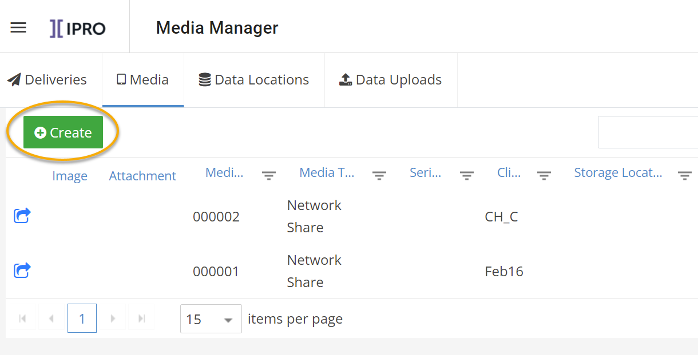

This topic contains high-level procedures to help you get started using Media Manager.
The following illustration shows the basic process outline. The numbers correspond to the procedures later in this topic.
The basic workflow diagram, above, and the tasks that follow outline one way you can use the Media Manager module. This article covers a standard, basic, method for doing so. However, there are many procedures not covered in this topic. Furthermore, there may be alternative ways to complete the same processes.
|
|
Tip: To make it easier to find the procedures you need, the procedures are collapsed. If you want to expand a procedure, click the triangle next to the procedure title to open and close the detailed information. |
The following table shows the prerequisites that must be in place before you start.
|
Task |
Notes |
Links |
|---|---|---|
|
Create review case and processing case. |
In order to process data through Media Manager, you must have both a review case and a processing case. |
|
|
Add a copy station (optional). |
Copy stations are the devices in your network from which incoming media will be copied, such as computer and server hard drives (internal and external). A copy station is selected during media processing. |
|
|
Confirm UNC path for your data. |
This is the network path for where your media lives. Media Manager requires you to have your data stored in a UNC path location. |
|
|
Understand naming conventions for your organization and have all delivery/media details on hand. |
In order to maintain consistency in your media logs and streamline defining your media, it is important to be familiar with your organizations naming convention procedures and have all necessary information at hand. |
|
|
Ensure that environment settings are properly configured. |
|
|
|
Ensure the Import Series settings are set to your specifications. |
Before you ingest any data using Media Manager, consider whether you need to edit the Import Series in the Case Management module. For example you might edit an Import Series to change the BEGDOC number or change the volume number. |
|
To add a new incoming or outgoing delivery (receipt or production of case-related media):
Prepare for the delivery by ensuring you know your organization’s conventions for delivery details and have all needed information. If you would like to preview the New Delivery form fields in advance, you can follow steps 2 and 3 and then click Cancel. Check with your administrator if you have any questions.
|
|
Note: You may need to scroll down to access the entire new delivery form (including the Save button). |
In Media Manager, click the Deliveries tab, if needed. (The Deliveries tab displays when you first log in.)
Click Create and select Incoming or Outgoing from the drop-down list.
Enter or select needed delivery details.

After a delivery has been saved, optionally do one of the following:
Click < Back to return to the New Delivery form/create a new delivery. The delivery type will be the same as the delivery you just created.
Modify delivery details.
Once you have defined a delivery, you can then add media to that delivery. You can create new media, or choose from existing media. Expand the options below to see the processes for each approach.
Determine whether you would like to create the new media either on the Deliveries tab or the Media tab. Expand the options below to learn more about the differences between the two.
When creating new media via the deliveries tab, the new media will be added to a delivery.
On the Deliveries tab, create a new delivery or double-click an existing delivery.
On the Delivery summary page, click Add New Media.

When creating new media via the Media tab, the new media will not be added to a delivery. You can always choose to add it to a delivery later.
On the Media tab, click Create.

Complete the Add New Media form by filling out the fields as described in the following table. Ensure you have all necessary details and files before proceeding.

After a delivery has been created, complete the following steps to add existing media to the delivery:
Locate and double-click the delivery to which media is being added.
In the Current Media in Delivery area, click Add Existing Media:

In the
media list, locate and click  to select all media
to be added to the delivery.
to select all media
to be added to the delivery.
Click Add Selected Media.

If you've received media that contains data you would like to process immediately into a review case, you can do so through Media Manager. Media Manager also provides you the option of copying data from the media you receive to a specified network location, without processing that data into a case. Expand the options below to see the processes for each approach.
 icon.
icon. On the Media tab, click Create and Process Data Locations.

In the
Data Source Status pane, choose a Copy Station. The available drives display
to the right. Click
Connect on the selected drive. If you are not already connected to a Copy
Station, you will need to connect the media received in your shipment
to an available Copy Station. See
|
|
Important: If the serial number that is read from the connected drive differs from the data entered while registering the media, a warning message displays. |
Complete
Steps 1 - 3 (a green checkmark
 displays next to each step when it is complete.):
displays next to each step when it is complete.):
Step 1: Select Paths
Click Scan to scan the selected drive.
Select the directories you want to process.
Click [Root] to drill-down and select the subdirectories you want to process.
Click Next.
Step 2: Configure Job
From the Select Case drop-down list, select the case into which you want to process the data.
Select the Auto Start Discovery Job checkbox.
Select the type of discovery: StreamingDiscovery or Standard Discovery.
Click Next.
Step 3: Configure Data Locations & Process Data
Select
a Custodian or click  to create a new custodian.
to create a new custodian.
Select the Source Type of the media.
Click Process. The data is pushed into review using the type of discovery specified.
For more details, see
To copy data to a network location, follow the steps below.
icon. Click Copy Data to Network.

If you are not already connected to a Copy
Station, you will need to connect the media received in your shipment
to an available Copy Station. See
In the Data Status pane, choose a Copy Station. The available drives display to the right.
Click Connect on the selected drive.
|
|
Important: If the serial number that is read from the connected drive differs from the data entered in when registering the media, a warning message displays. |
Complete
Steps a - b (a green checkmark
displays next to each step when it is complete.):
Select Paths
From the Select Case drop-down list, select the case into which you want to process the data.
Select the connected drive to scan.
Click Next.
Enter Destination Path
Enter the Network Path.
Click Process.
For more details, see
On the Media tab of the Media Manger interface, you can monitor the status of your job, including how much data has been copied, discovered, filtered, exported, and is in Review.
When a media job is being processed or copied to the network, progress displays in the Data Locations pane on the Media tab for specific media.

The Job Status popup displays additional information (as provided) when you hover over the progression dials.
For more details, see